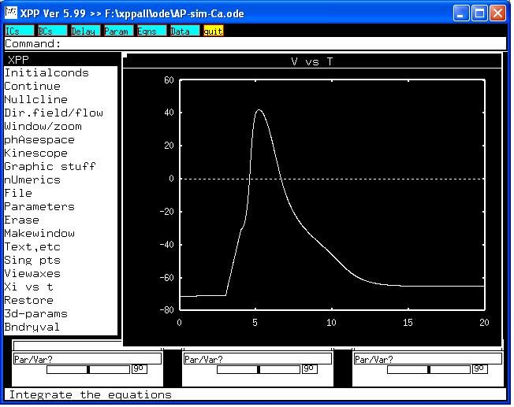

This is the readme.txt for the model associated with the paper: Brown AM. A modeling study predicts the presence of voltage gated Ca(2+) channels on myelinated central axons. Comput Meth Prog Biomed 2003;71:25-31. Abstract: The objective of this current study was to investigate whether voltage gated Ca(2+) channels are present on axons of the adult rat optic nerve (RON). Simulations of axonal excitability using a Hodgkin-Huxley based one-compartment model incorporating I(Na), I(K) and leak currents were used to predict conditions under which the potential contribution of a Ca(2+) current to an evoked action potential could be measured. Under control conditions the inclusion of a high threshold Ca(2+) current (I(Ca)) in the model had a negligible effect on the action potential. Reducing I(K), by decreasing the value of g(K), elongated the repolarizing phase of the action potential, increasing its duration. Subsequent incorporation of I(Ca) in the model revealed a significant I(Ca) contribution to the repolarizing phase of the action potential. The simulation thus suggests that Ca(2+) channels may be present on RON axons, but that pharmacological intervention is required to unmask their presence. Experiments based on the simulations revealed that there was no significant contribution of I(Ca) to the control action potential. However, as predicted by the simulation, reducing the repolarizing effect of I(K) by adding the K(+) channel blocker 4-AP revealed a Ca(2+) component on the repolarizing phase of the action potential that was blocked by the Ca(2+) channel inhibitor nifedipine. ------------ To run the model: XPP: start with the command xppaut AP-sim-Ca.ode Then click on Initialconds -> (G)o This simulation will make graphs similar to Figure 1 in the paper by Brown.  Changes in conductance of potassium and/or calcium currents can also be implemented. Bard Ermentrout's website: http://www.pitt.edu/~phase/ describes how to get and use XPP. This model file was submited by: Dr. Sheng-Nan Wu Department of Pharmaololgy & Toxicology Virginia Commonwealth Univesity School of Medicine Richmond, Virginia USA wshengnan at vcu.edu